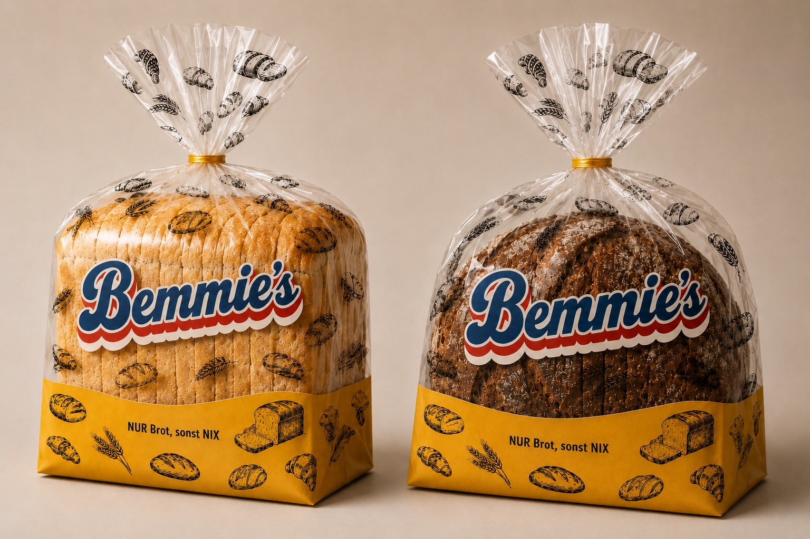
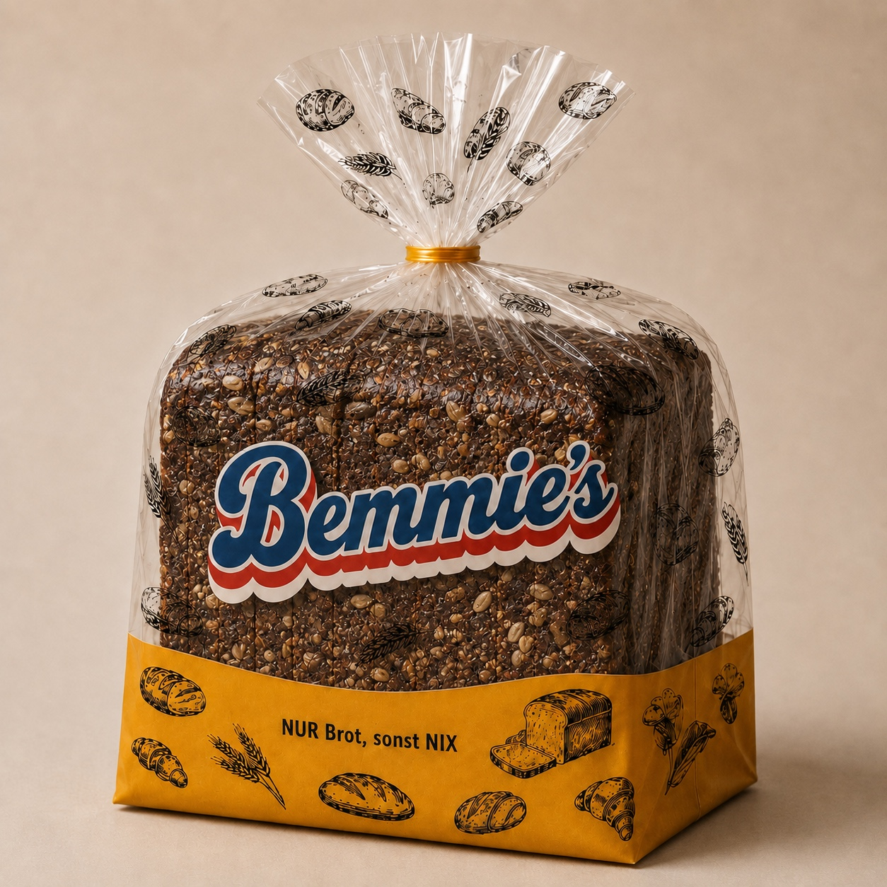

Ehrliches Brot mit Charakter
Korn an Korn.
Sonst nichts.
Ehrliches Brot mit Charakter
NUR Brot,
sonst NIX.
Unser Brot entdecken


Unser Brot
Korn an Korn
Dunkel, kernig und voller Charakter. Unser Korn-an-Korn-Brot bildet den Anfang von Bemmie’s.
NUR Brot, sonst NIX.
Das ist Bemmie’s
Einfach Brot.
Bemmie’s steht für eine klare Idee: Das Brot selbst soll im Mittelpunkt stehen. Ohne unnötigen Schnickschnack – ehrlich, direkt und mit einem unverwechselbaren Auftritt.